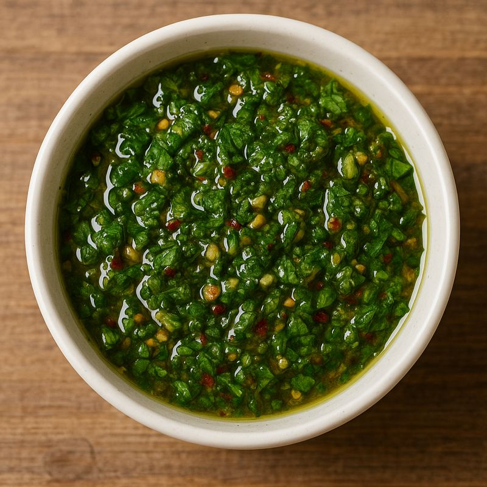

Chimichurri

This famous Argentinian chimichurri sauce is perfect for any grilled chicken, meat, or fish. My catering customers love it on garlic crostini with grilled flank steak slices.
Ingredients
- 1 cup fresh parsley
- ¾ cup extra virgin olive oil
- 3 tablespoons red wine vinegar
- 2 tablespoons dried oregano
- 2 teaspoons ground cumin
- 1 ½ teaspoons minced garlic
- 1 ½ teaspoons pepper sauce (such as Frank's Red Hot®)
- 1 teaspoon salt
Steps
- Gather all ingredients.
- Combine parsley, oil, vinegar, oregano, cumin, garlic, hot sauce, and salt in a blender or food processor.
- Mix on medium speed until ingredients are evenly blended, about 10 seconds.
- Enjoy!
Home